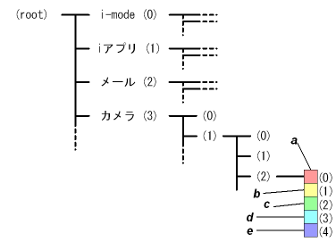

com.nttdocomo.ui.PhoneSystem
com.nttdocomo.ui.PhoneSystem
|
||||||||||
| 前のクラス 次のクラス | フレームあり フレームなし | |||||||||
| 概要: 入れ子 | フィールド | コンストラクタ | メソッド | 詳細: フィールド | コンストラクタ | メソッド | |||||||||
Object
携帯電話のデバイスを定義します。
電話システムクラスは、
プラットフォームのネイティブリソースにアクセスする手段を提供するクラスです。
[DoJa-2.0 以降]
標準サウンドを鳴らすことができます。
[DoJa-3.0 (505i) 以降]
トラステッドiアプリケーションでは、
音声発着信時等に表示される静止画
(JPEG・GIF・アニメーション GIF のこと。
このクラス中のドキュメントでは以下同様とします。)
や再生されるサウンドを設定することができます。
[DoJa-4.0 (901i) 以降]
加えて、FOMA 端末では、動画(i-motion のこと。
このクラス中のドキュメントでは以下同様とします。)を設定することもできます。
[DoJa-4.1 (902i) 以降]
音声発着信時等に表示される静止画として
JPEG・GIF・アニメーション GIF に加えてベクターグラフィックスを設定することができます
(このクラス中のドキュメントでは以下同様とします。)。
また、テレビ電話通話中の代替画像に表示されるアバターデータ(キャラ電データのこと。
このクラス中のドキュメントでは以下同様とします。)を設定することもできます。
| フィールドの概要 | |
static int |
ATTR_AREAINFO_COMMUNICATING
エリア情報の属性の一つで、 現在通信中であるため、エリア情報が不明であることを表します(=5)。 |
static int |
ATTR_AREAINFO_FOMA
エリア情報の属性の一つで、 FOMA 圏内、かつ HSDPA 圏外であることを表します(=0)。 |
static int |
ATTR_AREAINFO_HSDPA
エリア情報の属性の一つで、 HSDPA 圏内であることを表します(=1)。 |
static int |
ATTR_AREAINFO_OUTSIDE
エリア情報の属性の一つで、 圏外であることを表します(=2)。 |
static int |
ATTR_AREAINFO_ROAMINGOUT
エリア情報の属性の一つで、 圏内ではあるが、 端末がローミングアウト中であることを表します(=3)。 |
static int |
ATTR_AREAINFO_SELFMODE
エリア情報の属性の一つで、 セルフモード中であるため、 エリア情報が不明であることを表します(=4)。 |
static int |
ATTR_AREAINFO_UNKNOWN
エリア情報の属性の一つで、 セルフモード中、通信中以外の理由で、 エリア情報が不明であることを表します(=99)。 |
static int |
ATTR_BACKLIGHT_OFF
バックライトの属性の一つで、オフであることを表します (=0)。 |
static int |
ATTR_BACKLIGHT_ON
バックライトの属性の一つで、オンであることを表します (=1)。 |
static int |
ATTR_BATTERY_CHARGING
電池残量の属性の一つで、充電中であることを表します(=2)。 |
static int |
ATTR_BATTERY_FULL
電池残量の属性の一つで、充電中でなく、ピクト表示がFULLであることを表します(=1)。 |
static int |
ATTR_BATTERY_PARTIAL
電池残量の属性の一つで、充電中でなく、ピクト表示がFULL以外であることを表します(=0)。 |
static int |
ATTR_FOLDING_CLOSE [iアプリオプションAPI]
折りたたみ状態の属性の一つで、端末が折りたたまれているか、フリップが閉じていることを表します (=0)。 |
static int |
ATTR_FOLDING_OPEN [iアプリオプションAPI]
折りたたみ状態の属性の一つで、端末が折りたたまれていないか、フリップが開いていることを表します (=1)。 |
static int |
ATTR_MAIL_AT_CENTER
メール受信状態の属性の一つで、未読メールがセンターに保管されていることを表します (=2)。 |
static int |
ATTR_MAIL_NONE
メール受信状態の属性の一つで、未読メールがないことを表します (=0)。 |
static int |
ATTR_MAIL_RECEIVED
メール受信状態の属性の一つで、未読メールがあることを表します (=1)。 |
static int |
ATTR_MANNER_OFF
マナーモードの属性の一つで、オフであることを表します(=0)。 |
static int |
ATTR_MANNER_ON
マナーモードの属性の一つで、オンであることを表します(=1)。 |
static int |
ATTR_MESSAGE_AT_CENTER
メッセージ受信状態の属性の一つで、未読メッセージがセンターに保管されていることを表します (=2)。 |
static int |
ATTR_MESSAGE_NONE
メッセージ受信状態の属性の一つで、未読メッセージがないことを表します (=0)。 |
static int |
ATTR_MESSAGE_RECEIVED
メッセージ受信状態の属性の一つで、未読メッセージがあることを表します (=1)。 |
static int |
ATTR_SCREEN_INVISIBLE [iアプリオプションAPI]
画面がユーザに見えるかどうかの属性の一つで、 画面が見えない状態であることを表します(=0)。 |
static int |
ATTR_SCREEN_VISIBLE [iアプリオプションAPI]
画面がユーザに見えるかどうかの属性の一つで、 画面が見える状態であることを表します(=1)。 |
static int |
ATTR_SERVICEAREA_INSIDE
推奨されていません。 DoJa-5.1 (905i) 以降では DEV_AREAINFO を利用して下さい。 |
static int |
ATTR_SERVICEAREA_OUTSIDE
推奨されていません。 DoJa-5.1 (905i) 以降では DEV_AREAINFO を利用して下さい。 |
static int |
ATTR_SURROUND_OFF [iアプリオプションAPI]
オーディオ出力のサラウンド機能の属性の一つで、 サラウンド機能が無効であることを表します(=0)。 |
static int |
ATTR_SURROUND_ON [iアプリオプションAPI]
オーディオ出力のサラウンド機能の属性の一つで、 サラウンド機能が有効であることを表します(=1)。 |
static int |
ATTR_VIBRATOR_OFF
バイブレータの属性の一つで、オフであることを表します(=0)。 |
static int |
ATTR_VIBRATOR_ON
バイブレータの属性の一つで、オンであることを表します (=1)。 |
static int |
DEV_AREAINFO
エリア情報を表します(=11)。 |
static int |
DEV_AUDIO_SURROUND [iアプリオプションAPI]
オーディオ出力のサラウンド機能を表します(=10)。 |
static int |
DEV_BACKLIGHT
バックライトを表します (=0)。 |
static int |
DEV_BATTERY
電池残量を表します (=5)。 |
static int |
DEV_FOLDING [iアプリオプションAPI]
折りたたみ状態を表します (=2)。 |
static int |
DEV_KEYPAD [iアプリオプションAPI]
キーパッドを表します (=8)。 |
static int |
DEV_MAILBOX
メール受信状態を表します (=3)。 |
static int |
DEV_MANNER
マナーモードを表します (=7)。 |
static int |
DEV_MESSAGEBOX
メッセージ（メッセージフリー、メッセージリクエスト）の受信状態を表します (=4)。 |
static int |
DEV_SCREEN_VISIBLE [iアプリオプションAPI]
画面がユーザに見える状態かどうかを表します(=9)。 |
static int |
DEV_SERVICEAREA
推奨されていません。 このフィールドは、DoJa-5.1 (905i) より DEV_AREAINFO に置き換えられました。 |
static int |
DEV_VIBRATOR
バイブレータを表します (=1)。 |
static int |
MAX_OPTION_ATTR
オプションのネイティブリソース属性の最大値です(=255)。 |
static int |
MAX_VENDOR_ATTR
ベンダ定義のネイティブリソース属性の最大値です(=127)。 |
static int |
MIN_OPTION_ATTR
オプションのネイティブリソース属性の最小値です(=128)。 |
static int |
MIN_VENDOR_ATTR
ベンダ定義のネイティブリソース属性の最小値です(=64)。 |
static int |
SOUND_ALARM
ユーザにスケジュールなどのイベントを通知するタイプの標準サウンドを表します (=3)。 |
static int |
SOUND_CONFIRM
ユーザの操作に対して処理を受け付けたことを通知するタイプの標準サウンドを表します (=4)。 |
static int |
SOUND_ERROR
ユーザにエラーを通知するタイプの標準サウンドを表します (=2)。 |
static int |
SOUND_INFO
ユーザに情報を通知するタイプの標準サウンドを表します (=0)。 |
static int |
SOUND_WARNING
ユーザに警告を通知するタイプの標準サウンドを表します (=1)。 |
static int |
THEME_AV_CALL_IN
テレビ電話着信を表すテーマ設定タイプです(=5)。 |
static int |
THEME_AV_CALLING [iアプリオプションAPI]
テレビ電話通話中の代替画像を表すテーマ設定タイプです (=7)。 |
static int |
THEME_CALL_IN
音声着信を表すテーマ設定タイプです(=2)。 |
static int |
THEME_CALL_OUT
音声発信を表すテーマ設定タイプです(=1)。 |
static int |
THEME_CHAT_RECEIVED
チャットメール着信を表すテーマ設定タイプです (=6)。 |
static int |
THEME_MESSAGE_RECEIVE
メールおよびショートメール・SMS、 メッセージ(R、F)着信を表すテーマ設定タイプです(=4)。 |
static int |
THEME_MESSAGE_SEND
メールおよびショートメール・SMS発信を表すテーマ設定タイプです(=3)。 |
static int |
THEME_STANDBY
待ち受け画面を表すテーマ設定タイプです(=0)。 |
| コンストラクタの概要 | |
protected |
PhoneSystem()
アプリケーションが直接このクラスのインスタンスを生成することはできません。 |
| メソッドの概要 | |
static int |
getAttribute(int attr)
ネイティブリソースの属性を取得します。 |
static boolean |
isAvailable(int attr)
ネイティブのリソースが制御可能かどうか調べます。 |
static void |
playSound(int type)
標準サウンドを鳴らします。 |
static void |
setAttribute(int attr,
int value)
ネイティブリソースの制御を行います。 |
static void |
setImageTheme(int target,
int id)
音声発着信時等に表示される静止画や Video トラックのみの動画、アバターデータを設定します。 |
static void |
setMenuIcons(int[] path,
int[] ids) [iアプリオプションAPI]
あるメニュー階層下のサブメニューのアイコンを一括設定します。 |
static void |
setMovieTheme(int target,
int id) [iアプリオプションAPI]
音声着信時等に再生される動画を設定します。 |
static void |
setSoundTheme(int target,
int id)
音声着信時等に再生されるサウンドやAudio トラックのみの動画を設定します。 |
| クラス Object から継承したメソッド |
equals, getClass, hashCode, notify, notifyAll, toString, wait, wait, wait |
| フィールドの詳細 |
public static final int DEV_BACKLIGHT
public static final int ATTR_BACKLIGHT_OFF
public static final int ATTR_BACKLIGHT_ON
public static final int DEV_VIBRATOR
[DoJa-2.x のみ]
端末によってはサポートされない場合があります。
public static final int ATTR_VIBRATOR_OFF
public static final int ATTR_VIBRATOR_ON
public static final int DEV_FOLDING [iアプリオプションAPI]
DEV_SCREEN_VISIBLE,
定数フィールド値public static final int ATTR_FOLDING_CLOSE [iアプリオプションAPI]
public static final int ATTR_FOLDING_OPEN [iアプリオプションAPI]
public static final int DEV_MAILBOX
[DoJa-5.1 (906i) 以降]
全画面表示によりメールピクトが表示されない場合でも、
表示されるべきメールピクトの表示状態と連動した属性の取得が可能です。
public static final int ATTR_MAIL_NONE
public static final int ATTR_MAIL_RECEIVED
public static final int ATTR_MAIL_AT_CENTER
[DoJa-3.0 (505i) 以降] センターに保管されているものがメッセージかメールか区別できない場合、 メッセージ、メールのいずれかが保管されていればこの値を返します。
public static final int DEV_MESSAGEBOX
[DoJa-5.1 (906i) 以降]
全画面表示によりメッセージピクトが表示されない場合でも、
表示されるべきメッセージピクトの表示状態と連動した属性の取得が可能です。
public static final int ATTR_MESSAGE_NONE
public static final int ATTR_MESSAGE_RECEIVED
public static final int ATTR_MESSAGE_AT_CENTER
[DoJa-3.0 (505i) 以降] センターに保管されているものがメッセージかメールか区別できない場合、 メッセージ、メールのいずれかが保管されていればこの値を返します。
public static final int DEV_BATTERY
属性の取得のみ可能で、制御することはできません。
public static final int ATTR_BATTERY_PARTIAL
[DoJa-5.1 (906i) 以降]
全画面表示によりピクトが表示されない場合でも、
表示されるべきピクトの表示状態がこの属性と同じであれば、この属性の取得が可能です。
public static final int ATTR_BATTERY_FULL
[DoJa-5.1 (906i) 以降]
全画面表示によりピクトが表示されない場合でも、
表示されるべきピクトの表示状態がこの属性と同じであれば、この属性の取得が可能です。
public static final int ATTR_BATTERY_CHARGING
public static final int DEV_SERVICEAREA
属性の取得のみ可能で、制御することはできません。
public static final int ATTR_SERVICEAREA_OUTSIDE
public static final int ATTR_SERVICEAREA_INSIDE
public static final int DEV_MANNER
属性の取得のみ可能で、制御することはできません。
public static final int ATTR_MANNER_OFF
public static final int ATTR_MANNER_ON
public static final int DEV_KEYPAD [iアプリオプションAPI]
キーパッドを表します (=8)。
低レベル・高レベル API において、
キーのグループごとにキーを有効とするかどうかを制御します。
ユーザが有効なグループのキーを操作した場合はキーイベントが発生し、
また、キーパッド状態を取得することが可能です。
一方、無効なグループのキーを操作した場合はキーイベントも発生しませんし、
キーパッド状態を取得することもできません。
デフォルトではグループ 0 のキーのみが有効となっています。
キーの有効化は、iアプリが起動してから最初に
Display.setCurrent(Frame)
を呼び出すまでに行わなければなりません。
それ以降にキーを有効化しようとしても無視されます。
また、一度有効化すると無効化することはできません。
属性値としてキーのグループ番号を指定して setAttribute(int, int)
メソッドを呼び出すと、
そのグループのキーが有効になります。
例えば PhoneSystem.setAttribute(DEV_KEYPAD, 1) とすると、
グループ 1 のキーが有効になります。
属性の制御のみ可能で、取得することはできません。
Canvas.getKeypadState(int),
定数フィールド値public static final int DEV_SCREEN_VISIBLE [iアプリオプションAPI]
画面がユーザに見える状態かどうかを表します(=9)。
ストレートタイプの端末では、
常に ATTR_SCREEN_VISIBLE を返します。
折りたたみ型の端末では、端末の状態に応じて
ATTR_SCREEN_INVISIBLE、ATTR_SCREEN_VISIBLE
のいずれかを返します。
属性の取得のみ可能で、制御することはできません。
[DoJa-3.5 (900i) のみ]
折りたたみ型の端末であっても、
端末によってはサポートされない場合があります。
その場合、属性値は常に -1 を返します。
DEV_FOLDING,
定数フィールド値public static final int ATTR_SCREEN_INVISIBLE [iアプリオプションAPI]
public static final int ATTR_SCREEN_VISIBLE [iアプリオプションAPI]
public static final int DEV_AUDIO_SURROUND [iアプリオプションAPI]
オーディオ出力のサラウンド機能を表します(=10)。
端末がサラウンド機能をサポートしている場合のみ意味を持ちます。
端末がサラウンド機能をサポートしている場合、
属性を取得することによってサラウンド機能が有効になっているか無効になっているかを判別することができます。
また、ネイティブのユーザ設定によってサラウンド機能がオンに設定されている場合は、
属性の制御が可能で、サラウンド機能を有効にしたり無効にしたりすることができます。
ただし、オーディオプレゼンタの再生中に制御することはできません。
サラウンド機能は 3D サウンド機能と同時に使用することはできません。
アプリの起動直後は、
サラウンド機能および 3D サウンド機能の有効・無効の切り替えは、
端末ごとに機種依存の方法で行われます。
アプリがこの属性を制御して明示的にサラウンド機能を無効にした場合、
サラウンド機能は使用されません。
アプリがこの属性を制御して明示的にサラウンド機能を有効にした場合、
3D サウンド機能を使用することはできません。
属性の制御と取得が可能です。
[DoJa-5.0 (903i) 以降]
public static final int ATTR_SURROUND_OFF [iアプリオプションAPI]
public static final int ATTR_SURROUND_ON [iアプリオプションAPI]
public static final int DEV_AREAINFO
エリア情報を表します(=11)。
属性の取得のみ可能で、制御することはできません。
public static final int ATTR_AREAINFO_FOMA
エリア情報の属性の一つで、 FOMA 圏内、かつ HSDPA 圏外であることを表します(=0)。
public static final int ATTR_AREAINFO_HSDPA
エリア情報の属性の一つで、 HSDPA 圏内であることを表します(=1)。
public static final int ATTR_AREAINFO_OUTSIDE
エリア情報の属性の一つで、 圏外であることを表します(=2)。 セルフモードである場合は含まれません。
public static final int ATTR_AREAINFO_ROAMINGOUT
エリア情報の属性の一つで、 圏内ではあるが、 端末がローミングアウト中であることを表します(=3)。
public static final int ATTR_AREAINFO_SELFMODE
エリア情報の属性の一つで、 セルフモード中であるため、 エリア情報が不明であることを表します(=4)。
public static final int ATTR_AREAINFO_COMMUNICATING
エリア情報の属性の一つで、 現在通信中であるため、エリア情報が不明であることを表します(=5)。
public static final int ATTR_AREAINFO_UNKNOWN
エリア情報の属性の一つで、 セルフモード中、通信中以外の理由で、 エリア情報が不明であることを表します(=99)。
public static final int MIN_VENDOR_ATTR
public static final int MAX_VENDOR_ATTR
public static final int MIN_OPTION_ATTR
public static final int MAX_OPTION_ATTR
public static final int SOUND_INFO
playSound(int) メソッドの引数として使用されます。
public static final int SOUND_WARNING
playSound(int) メソッドの引数として使用されます。
public static final int SOUND_ERROR
playSound(int) メソッドの引数として使用されます。
public static final int SOUND_ALARM
playSound(int) メソッドの引数として使用されます。
public static final int SOUND_CONFIRM
playSound(int) メソッドの引数として使用されます。
public static final int THEME_STANDBY
setImageTheme
メソッドの target 引数として使用されます。
[DoJa-4.0 (901i) 以降]
setMovieTheme
メソッドの target 引数としても使用されます。
public static final int THEME_CALL_OUT
setImageTheme
メソッドのtarget引数として使用されます。
public static final int THEME_CALL_IN
setImageTheme、
setSoundTheme
メソッドのtarget引数として使用されます。
[DoJa-4.0 (901i) 以降]
setMovieTheme
メソッドの target 引数としても使用されます。
public static final int THEME_MESSAGE_SEND
setImageTheme
メソッドのtarget引数として使用されます。
ショートメールは PDC 端末でのみ、SMS は FOMA 端末でのみ使用できます。
public static final int THEME_MESSAGE_RECEIVE
setImageTheme、
setSoundTheme
メソッドのtarget引数として使用されます。
[DoJa-4.1 (902iS) 以降]
setMovieTheme
メソッドの target 引数としても使用されます。
ショートメールは PDC 端末でのみ、SMS は FOMA 端末でのみ使用できます。
public static final int THEME_AV_CALL_IN
setSoundTheme
メソッドのtarget引数として使用されます。
FOMA 端末でのみ使用できます。
[DoJa-4.0 (901i) 以降]
setImageTheme、
setMovieTheme
メソッドの target 引数としても使用されます。
public static final int THEME_CHAT_RECEIVED
チャットメール着信を表すテーマ設定タイプです
(=6)。
setSoundTheme
メソッドの target 引数として使用されます。
public static final int THEME_AV_CALLING [iアプリオプションAPI]
テレビ電話通話中の代替画像を表すテーマ設定タイプです
(=7)。
setImageTheme
メソッドの target 引数として使用されます。
| コンストラクタの詳細 |
protected PhoneSystem()
| メソッドの詳細 |
public static final void setAttribute(int attr,
int value)
attr - ネイティブリソース属性の種類を指定します。value - ネイティブリソースに設定する属性値を指定します。
IllegalArgumentException - [DoJa-2.0 以降] 引数 attr で指定された有効なリソースに対して、引数 value に不正な属性値が指定された場合に発生します。
public static final int getAttribute(int attr)
ネイティブリソースの属性を取得します。 存在しないリソースの種類が指定された場合は -1 を返します。
attr - ネイティブリソース属性の種類を指定します。
IllegalStateException - [DoJa-3.0 (505i) 以降]
ADFにGetSysInfoキーの指定がないと
SecurityExceptionが発生する属性を指定して、
ダウンロード即起動アプリから呼び出された場合に発生します。
SecurityException - [DoJa-2.x のみ]
ADFにGetSysInfoキーの指定がないアプリケーションがメール、
メッセージのピクト情報を取得しようとした場合に発生します。public static final boolean isAvailable(int attr)
setAttribute(int, int) メソッドで制御することが可能です。
端末がそのリソースの制御をサポートしていない場合や、
端末の設定によってそのリソースの制御が制限されている場合は false を返します。
待ち受け実行の時、活性化状態・非活性化状態によってリソースの制御が
制限されている場合は false を返します。
状態を取得するだけで制御することができない属性に対して呼び出された場合は常に false を返します。
存在しないリソースの種類が指定された場合は false を返します。
attr - ネイティブリソース属性の種類を指定します。
public static final void playSound(int type)
type - 標準サウンドの種類を指定します。
SOUND_INFO、SOUND_WARNING、SOUND_ERROR、
SOUND_ALARM、SOUND_CONFIRM
のいずれかです。
IllegalArgumentException - 引数 type に不正な値が指定された場合に発生します。
IllegalStateException -
[DoJa-2.1以降] 音声・テレビ電話通話中に呼び出された場合に発生します。
IllegalStateException -
[DoJa-5.0 (903i) のみ]
音楽プレイヤーを優先モードで実行中に呼び出された場合に発生します。
UIException -
[DoJa-4.1 (902iS) 以降]
PTT 呼通信中の場合に発生します(BUSY_RESOURCE)。
public static void setImageTheme(int target,
int id)
throws StoreException
ImageStore.addEntry(MediaImage)メソッド、
ImageStore.getId()メソッド、
ImageStore.selectEntryId()メソッド
により取得できます。
[DoJa-4.0 (901i) 以降] FOMA 端末においては、
Video トラックのみの動画を設定することも可能です。
Video
トラックと Audio トラックの両方が含まれた動画は設定できません。
そのような動画を設定するには
setMovieTheme(int, int) を利用して下さい。
設定する動画のエントリ ID は MovieStore.addEntry(MediaImage)
メソッド、MovieStore.getId()
メソッドにより取得できます。
動画に Video トラックが含まれているかどうか、
Audio トラックが含まれていないかどうかは、
MediaResource.getProperty(String) の引数に、それぞれ
MediaImage.MP4_VIDEOTRACK、
MediaImage.MP4_AUDIOTRACK
を指定することによって調べることができます。
既に音声着信音やテレビ電話着信音に動画(動画の Audio トラック)が設定されている状態でこのメソッドを呼び出すと、 音声着信音やテレビ電話着信音がリセットされる場合があります。 リセットされるケースの詳細は以下の通りです。
なお、これらのケースにおいて、 リセットされることに対するユーザ確認は行われません。
[DoJa-4.1 (902i) 以降]
FOMA 端末においては、アバターデータを設定することも可能です。
設定するアバターデータのエントリ ID は
AvatarStore.addEntry(AvatarData) メソッド、
AvatarStore.selectEntryId()メソッドにより取得できます。
引数 target には、 以下のいずれかのテーマ設定タイプを指定することができます。
ImageStore のエントリ ID を指定する場合
THEME_STANDBY)
THEME_CALL_OUT)
THEME_CALL_IN)
THEME_MESSAGE_SEND)
THEME_MESSAGE_RECEIVE)
THEME_AV_CALL_IN)
MovieStore のエントリ ID を指定する場合
(FOMA 端末のみ)
THEME_CALL_IN)
THEME_AV_CALL_IN)
AvatarStore のエントリ ID を指定する場合
(FOMA 端末のみ)
THEME_AV_CALLING)
上記のテーマ設定タイプの中には、端末によって未サポートのものもあります。
その場合、指定されても何も行われず無視されます。
また、上記以外のテーマ設定タイプを指定した場合、IllegalArgumentException
が発生します。
原則として、静止画や動画の、 設定可能な縦/横サイズは、 同等なネイティブ機能で設定可能なサイズと同様です。 また、設定された静止画や動画やアバターデータの具体的な表示方法も、 ネイティブ機能で同様な設定をした場合と同様です。 ただし、 表示可能な画面サイズよりも小さい静止画を指定した場合の表示方法は機種依存です。
パーミッションとしてテーマ設定が許可されている トラステッドiアプリのみこのメソッドを呼び出すことができます。
target -
テーマ設定タイプを指定します。id -
ImageStore または
MovieStore
、AvatarStore エントリ ID を指定します。
IllegalStateException - このメソッドを呼び出す度にユーザ確認が必要であると設定されているにもかかわらず、
待ち受け実行時の非活性化状態で呼び出された場合に発生します。
IllegalArgumentException - 引数 target の値が不正な場合に発生します。
SecurityException - パーミッションとしてテーマ設定が許可されているが、
iアプリ個別のユーザ設定により許可されていない場合に発生します。
実行時のユーザ確認により使用が許可されなかった場合を含みます。
SecurityException - ネイティブ独自のセキュリティ設定により、
指定された静止画や動画やアバターデータへのアクセスが許可されない場合に発生します。
StoreException - 指定された ID の静止画や動画やアバターデータが存在しない場合や、
無効な ID (区間 [-256, 0] に属する整数)
が指定された場合に発生します(NOT_FOUND)。
ImageStore.addEntry(MediaImage, boolean)
メソッドにより、独占すると指定して保存された静止画であり、かつ、
このアプリケーション自身が保存したものではない場合にも発生します。
UIException -
[DoJa-3.5 (900i) 以降]
指定された対象では指定されたIDの静止画や動画やアバターデータのフォーマットをサポートしていない場合に発生します
(UNSUPPORTED_FORMAT)。
UIException - 指定された ID の静止画や動画の縦/横のサイズが、
設定可能な範囲から外れている場合に発生します
(UNSUPPORTED_FORMAT)。
ただし、静止画が指定された場合には、
縦/横サイズが小さすぎることが原因でこの例外が発生することはありません。
UIException -
[DoJa-4.0 (901i) 以降] 指定された静止画や動画やアバターデータのデータサイズが、
設定可能なデータサイズ(bytes)よりも大きい場合に発生します
(UNSUPPORTED_FORMAT)。
UIException -
[DoJa-4.0 (901i) 以降] 指定された動画が再生可能な
Video トラックを含まない場合や、Video
トラック以外のトラックが含まれている場合に発生します
(UNSUPPORTED_FORMAT)。
UIException - [DoJa-4.1 (902i) 以降]
指定されたアバターデータの内容(総モデルデータサイズや、モデル数など)が、
端末のサポート範囲を超えている場合に発生します(UNSUPPORTED_FORMAT)。
public static void setSoundTheme(int target,
int id)
throws StoreException
音声着信時等に再生されるサウンドやAudio トラックのみの動画を設定します。
番号不通知着信音、公衆電話着信音、転送着信音、
番号指定着信音は変更できません。
アプリケーションが終了後もこの設定は有効です。
また、アプリケーション削除後もこの設定は有効です。
着信音に使用するサウンドデータの ID は、
[DoJa-4.0 (901i) 以降] FOMA 端末においては、
Audio トラックのみの動画を設定することも可能です。
Video トラックと
Audio トラックの両方が含まれた動画は設定できません。
そのような動画を設定するには
既に音声着信画面やテレビ電話着信画面に動画(動画の Video
トラック)や、ベクターグラフィックスの Video
成分が設定されている状態でこのメソッドを呼び出すと、
音声着信画面やテレビ電話着信画面がリセットされる場合があります。
リセットされるケースの詳細は以下の通りです。
なお、これらのケースにおいて、
リセットされることに対するユーザ確認は行われません。
引数 target には、
以下のいずれかのテーマ設定タイプを指定することができます。
上記のテーマ設定タイプの中には、端末によって未サポートのものもあります
(PDC 端末で引数 target に THEME_AV_CALL_IN が指定された場合など)。
その場合、指定されても何も行われず無視されます。
パーミッションとしてテーマ設定が許可されている
トラステッドiアプリのみこのメソッドを呼び出すことができます。
SoundStore.addEntry(MediaSound)
メソッドにより取得できます。
setMovieTheme(int, int)
を利用して下さい。
設定する動画のエントリ ID は MovieStore.addEntry(MediaImage)
メソッドにより取得できます。
動画に Audio トラックが含まれているかどうか、
Video トラックが含まれていないかどうかは、
MediaResource.getProperty(String) の引数に、
それぞれ
MediaImage.MP4_AUDIOTRACK、
MediaImage.MP4_VIDEOTRACK
を指定することによって調べることができます。
SoundStore のエントリ ID を指定する場合
THEME_CALL_IN)
THEME_MESSAGE_RECEIVE)
THEME_AV_CALL_IN)
THEME_CHAT_RECEIVED)
MovieStore のエントリ ID を指定する場合
(FOMA 端末のみ)
THEME_CALL_IN)
THEME_AV_CALL_IN)
また、上記以外のテーマ設定タイプを指定した場合、
IllegalArgumentException が発生します。
target -
テーマ設定タイプを指定します。id -
SoundStore または
MovieStore のエントリ IDを指定します。
IllegalStateException - このメソッドを呼び出す度にユーザ確認が必要であると設定されているにもかかわらず、
待ち受け実行時の非活性化状態で呼び出された場合に発生します。
IllegalArgumentException - 引数 target の値が不正な場合に発生します。
SecurityException - パーミッションとしてテーマ設定が許可されているが、
iアプリ個別のユーザ設定により許可されていない場合に発生します。
実行時のユーザ確認により使用が許可されなかった場合を含みます。
SecurityException - ネイティブ独自のセキュリティ設定により、
指定されたサウンドや動画へのアクセスが許可されない場合に発生します。
StoreException - 指定された ID のサウンドや動画が存在しない場合や、
無効な ID (区間 [-256, 0] に属する整数)
が指定された場合に発生します(NOT_FOUND)。
UIException -
[DoJa-3.5 (900i) 以降]
指定された対象では指定されたIDのサウンドや動画のフォーマットをサポートしていない場合に発生します
(UNSUPPORTED_FORMAT)。
UIException -
[DoJa-4.0 (901i) 以降]
指定されたIDのサウンドや動画のデータサイズが、
設定可能なデータサイズ(bytes)よりも大きい場合に発生します
(UNSUPPORTED_FORMAT)。
UIException -
[DoJa-4.0 (901i) 以降]
指定された動画が再生可能な
Audio トラックを含まない場合や、
Audio トラック以外のトラックが含まれている場合に発生します
(UNSUPPORTED_FORMAT)。
public static void setMovieTheme(int target,
int id)
throws StoreException [iアプリオプションAPI]
音声着信時等に再生される動画を設定します。 アプリケーションが終了後もこの設定は有効です。 また、アプリケーション削除後もこの設定は有効です。
設定される動画は必ず Video トラックと Audio
トラックの両方を含んでいなければなりません。
それぞれのトラックが含まれているかどうかは、
MediaResource.getProperty(String) の引数に
MediaImage.MP4_VIDEOTRACK や MediaImage.MP4_AUDIOTRACK
を指定することによって調べることができます。
パーミッションとしてテーマ設定が許可されているトラステッドiアプリのみ このメソッドを呼び出すことができます。
引数 target には、 以下のいずれかのテーマ設定タイプを指定することができます。
THEME_STANDBY)
THEME_CALL_IN)
THEME_AV_CALL_IN)
THEME_MESSAGE_RECEIVE)
上記のテーマ設定タイプの中には、端末によって未サポートのものもあります。
その場合、指定されても何も行われず無視されます。
また、上記以外のテーマ設定タイプを指定した場合、IllegalArgumentException
が発生します。
原則として、動画の、設定可能な縦/横サイズは、 同等なネイティブ機能で設定可能なサイズと同様です。 また、設定された動画の具体的な表示方法も、 ネイティブ機能で同様な設定をした場合と同様です。
target - テーマ設定タイプを指定します。id - MovieStore のエントリ ID を指定します。
IllegalStateException -
このメソッドを呼び出す度にユーザ確認が必要であると設定されているにもかかわらず、
待ち受け実行時の非活性化状態で呼び出された場合に発生します。
IllegalArgumentException -
引数 target の値が不正な場合に発生します。
SecurityException -
パーミッションとしてテーマ設定が許可されているが、
i アプリ個別のユーザ設定により許可されていない場合に発生します。
実行時のユーザ確認により使用が許可されなかった場合を含みます。
SecurityException -
ネイティブ独自のセキュリティ設定により、
指定された動画へのアクセスが許可されない場合に発生します。
指定された ID の動画が、
このアプリケーション自身が保存したものではなく、かつ、
その動画データに再配布不可識別子が設定されている場合にも発生します。
StoreException -
指定された ID の動画が存在しない場合や、
無効な ID (区間 [-256, 0] に属する整数)
が指定された場合に発生します(NOT_FOUND)。
UIException -
指定された ID の動画の縦/横のサイズが、
設定可能な範囲から外れている場合に発生します
(UNSUPPORTED_FORMAT)。
UIException -
指定された ID の動画のデータサイズが、
設定可能なデータサイズ(bytes)よりも大きい場合に発生します
(UNSUPPORTED_FORMAT)。
UIException -
指定された動画が再生可能な
Video トラックまたは Audio トラックを含まない場合に発生します
(UNSUPPORTED_FORMAT)。
UIException -
音声/テレビ電話着信画面として指定された動画に Text
トラックが含まれていた場合に発生します(UNSUPPORTED_FORMAT)。
public static void setMenuIcons(int[] path,
int[] ids)
throws StoreException [iアプリオプションAPI]
あるメニュー階層下のサブメニューのアイコンを一括設定します。 引数 path によって、アイコンを一括設定したい階層の位置を指定し、 引数 ids に静止画のエントリ ID の配列を指定することによって、 どのメニューアイテムにどのアイコンを設定するかを指定します。

メニュー階層は、 トップメニュー階層をルートとしたツリー構造としてモデル化されており、 各メニュー階層には、その階層内の各メニューアイテムに 0, 1, 2, ... と、 位置番号が割り振られています。 引数 path には、ルートを長さ0の int 配列 (new int[0])
として、アイコンを設定したい階層までのパスを、
位置番号を並べて指定します。
例えば、右図において、トップメニュー
(「i-mode」、「iアプリ」、「メール」、… がある階層)
にアイコンを指定したい時には
new int[0] を、
色の付いている部分のアイコンを指定したい場合には
new int[] {3, 1, 2} を、path として指定することとなります。
引数 ids には、上記のように指定した
path 配下にあるメニューアイコンに設定する静止画の配列を、
エントリ ID の配列として指定します。
ids[i] に指定された静止画エントリ ID は、
位置番号 i のアイコン画像として設定されます。
例えば、前掲の図において、色の付いている部分のアイコンを、
0番目から順に、エントリ ID が
a, b, c, d, e
の静止画としたい場合には、
new int[] {a, b, c,
d, e} を、
ids として指定することとなります。
なお、ある階層の、一部のアイコンを設定したくない場合には、
id として -1 を指定して下さい。
-1 が指定された部分のアイコン画像は変化しません。
アイコンの数よりも長い配列を指定した場合には、 余分な要素は単に無視されます。 余分な要素に不正な値が入っていた場合でも例外は発生しません。 アイコンの数よりも短い配列を指定した場合には、 足りない要素には -1 が指定されているものとみなされます。
どの位置にどのメニューアイテムが割り当てられているかは、 機種によって異なります。 別途提供されるメニュー構成図を参照しながら位置番号を設定してください。
このメソッドをサポートしていない実装も存在します。 その場合には、例外 UnsupportedOperationException が発生します。
このメソッドをサポートしている実装では、
少なくともトップメニュー
(path = new int[0])
のアイコン画像が設定できることは保証されています。
その他の階層のアイコン画像が設定できるかどうかは機種依存です。
パーミッションとしてテーマ設定が許可されている トラステッド i アプリのみ、このメソッドを呼び出すことができます。
[DoJa-5.1 (905i) 以降]
このメソッド呼び出しによるメニューアイコン設定は、
基本構造メニューのみに影響します。
メニュー画面に基本構造メニューが設定されていない状態でこのメソッドを実行した場合、
メニュー画面を基本構造メニューに変更した上で、アイコンが設定されます。
path - アイコンを設定したいメニュー階層へのパスを、
位置番号の配列で指定します。ids - 各アイコンに設定したい静止画のエントリ ID
の配列を指定します。
-1 を指定した部分に対応するアイコンは変化しません。
UnsupportedOperationException - 端末がこのメソッドをサポートしていない場合に発生します。
IllegalStateException - このメソッドを呼び出す度にユーザ確認が必要であると設定されているにもかかわらず、
待ち受け実行時の非活性化状態で呼び出された場合に発生します。
NullPointerException - 引数 path または ids に null が指定された場合に発生します。
SecurityException - パーミッションとしてテーマ設定が許可されているが、
i アプリ個別のユーザ設定により許可されていない場合に発生します。
実行時のユーザ確認により使用が許可されなかった場合を含みます。
IllegalArgumentException - 引数 path で指定されたメニュー階層が存在しないか、
アイコン設定をサポートしていないメニュー階層である場合に発生します。
path 配列の要素中に負の数が含まれている場合を含みます。
SecurityException - 引数 ids のいずれかの要素に、
ネイティブ独自のセキュリティ設定によりアクセスが禁止されている静止画の
ID が指定されていた場合に発生します。
StoreException - 引数 ids のいずれかの要素に、
存在しない静止画のエントリ ID
が指定されていた場合や、-1 を除く無効な ID
(-256, -255, -254, ..., -3, -2, 0)
が指定された場合に発生します(NOT_FOUND)。
UIException - 引数 ids のいずれかの要素に、
アイコン画像としてサポートしていないフォーマットの静止画のエントリ
ID が指定されていた場合に発生します(UNSUPPORTED_FORMAT)。
UIException - 引数 ids のいずれかの要素に、
縦/横サイズが設定可能な範囲から外れているような静止画のエントリ
ID が指定されていた場合に発生します(UNSUPPORTED_FORMAT)。
UIException - 引数 ids のいずれかの要素に、
設定可能なデータサイズ (bytes) よりも大きな静止画のエントリ ID
が指定されていた場合に発生します(UNSUPPORTED_FORMAT)。
|
||||||||||
| 前のクラス 次のクラス | フレームあり フレームなし | |||||||||
| 概要: 入れ子 | フィールド | コンストラクタ | メソッド | 詳細: フィールド | コンストラクタ | メソッド | |||||||||
NTT DOCOMO,INC.
本製品または文書は著作権法により保護されており、その使用、複製、再頒布および逆コンパイルを制限するライセンスのもとにおいて頒布されます。NTTドコモ（その他に許諾者がある場合は当該許諾者も含めて）の書面による事前の許可なく、本製品および関連する文書のいかなる部分も、いかなる方法によっても複製することが禁じられます。フォントを含む第三者のソフトウェアは、著作権法により保護されており、その提供者からライセンスを受けているものです。
Sun、Sun Microsystems、Java、J2MEおよびJ2SEは、米国およびその他の国における米国 Sun Microsystems,Inc.の商標または登録商標です。サンのロゴマークは、米国 Sun Microsystems, Inc.の登録商標です。
FeliCaは、ソニー株式会社が開発した非接触ICカードの技術方式です。FeliCaは、ソニー株式会社の登録商標です。
「ｉモード」、「ｉアプリ／アイアプリ」、「ｉ-αppli」ロゴ、「DoJa」はNTTドコモの商標または登録商標です。
その他記載された会社名、製品名などは該当する各社の商標または登録商標です。